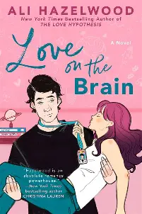

Blog de Livros

"A razão do amor é o segundo romance de Ali Hazelwood,
que repete o sucesso de A hipótese do amor ao trazer uma história
ambientada no mundo acadêmico — embora os livros não tenham conexão entre si.
Publicado em 2022 pela Arqueiro, tem tradução de Raquel Zampil.
A premissa é bastante simples: a neurocientista Bee Königswasser
conquista uma vaga para trabalhar em um projeto da Nasa,
o que alavancaria sua carreira… não fosse seu
parceiro de trabalho ser justamente Levi Ward,
que sempre deixou bastante expressa sua repulsa por ela."
Ali Hazelwood consolidou-se como uma das principais vozes do romance STEM contemporâneo,
e Não é amor (originalmente “Not in Love”) representa uma evolução significativa em sua obra.
A autora, conhecida por “A Hipótese do Amor”,
demonstra maturidade narrativa ao abordar relacionamentos complexos entre profissionais da ciência.
Rue Siebert é engenheira de biotecnologia na Kline, uma das mais promissoras startups no campo da ciência dos alimentos,
estabelecendo o cenário científico que marca a assinatura da autora.